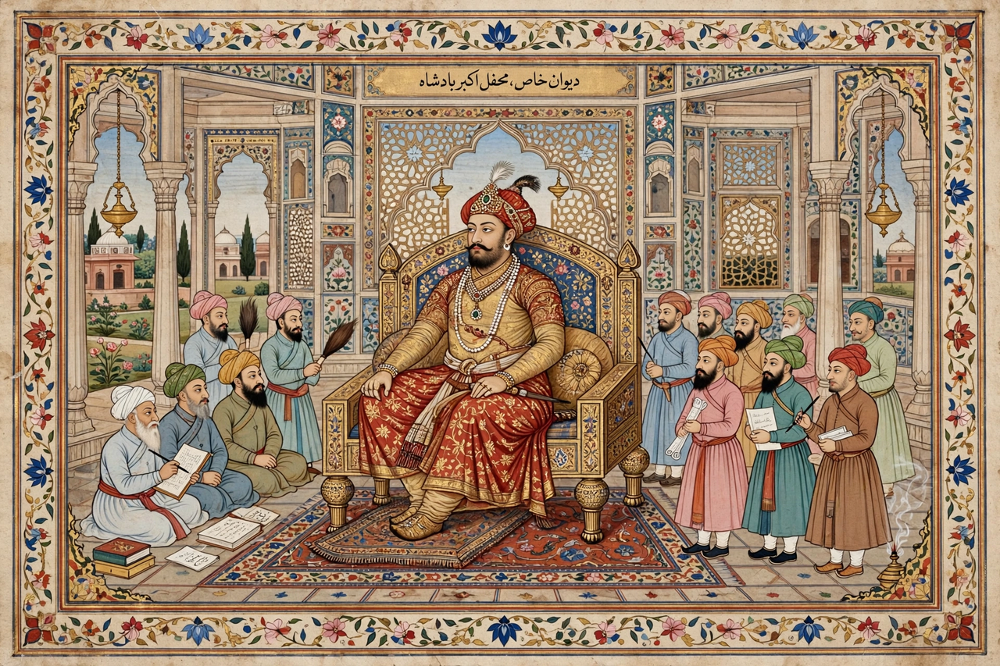

Akbar
From Wikipedia, the free encyclopedia

Akbar (Jalal-ud-din Muhammad Akbar, 15 October 1542 – 27 October 1605), known as Akbar the Great, was the third Mughal emperor, reigning from 1556 until his death. He vastly expanded and consolidated Mughal rule over the Indian subcontinent, built an administrative system that endured for two centuries, and pursued — unusually for his age — policies of religious tolerance, abolishing the jizya tax on non-Muslims and debating all faiths in his Ibadat Khana. He is ranked among the greatest rulers in Indian history.
Accession and conquest
Akbar succeeded his father Humayun at 13, with the regent Bairam Khan winning the Second Battle of Panipat (1556) against Hemu. Coming of age, he conquered Malwa, Gondwana, Gujarat, Bengal, Kashmir, Sindh and parts of the Deccan, subdued the Rajput kingdoms (by marriage alliances as much as sieges — Chittorgarh 1568 being the brutal exception) and made the empire stretch from Kabul to Bengal and the Deccan plateau.
Administration and culture
Akbar's finance minister Todar Mal rationalised land revenue (the zabt system); the mansabdari system graded officials by military rank; his court at Fatehpur Sikri (his purpose-built capital) and later Agra and Lahore attracted painters (the Mughal miniature school under Persian and Indian masters), translators (the Mahabharata rendered into Persian as the Razmnama) and the 'nine jewels' (navaratna) of courtiers, among them the wit Birbal, the musician Tansen and the historian Abul Fazl — whose Akbarnama and Ain-i-Akbari document the reign.
Religion and legacy
Akbar's sulh-i-kul ('peace with all') policy — interfaith debate, abolition of jizya (1564) and pilgrimage taxes, Rajput marriages, promotion of Hindus to high office — culminated in his eclectic court cult sometimes called Din-i Ilahi, which died with him. Orthodox ulama and later historians have alternately reviled and revered him; modern India largely claims him as a founding figure of pluralist statecraft, a judgement currently contested in textbook politics.